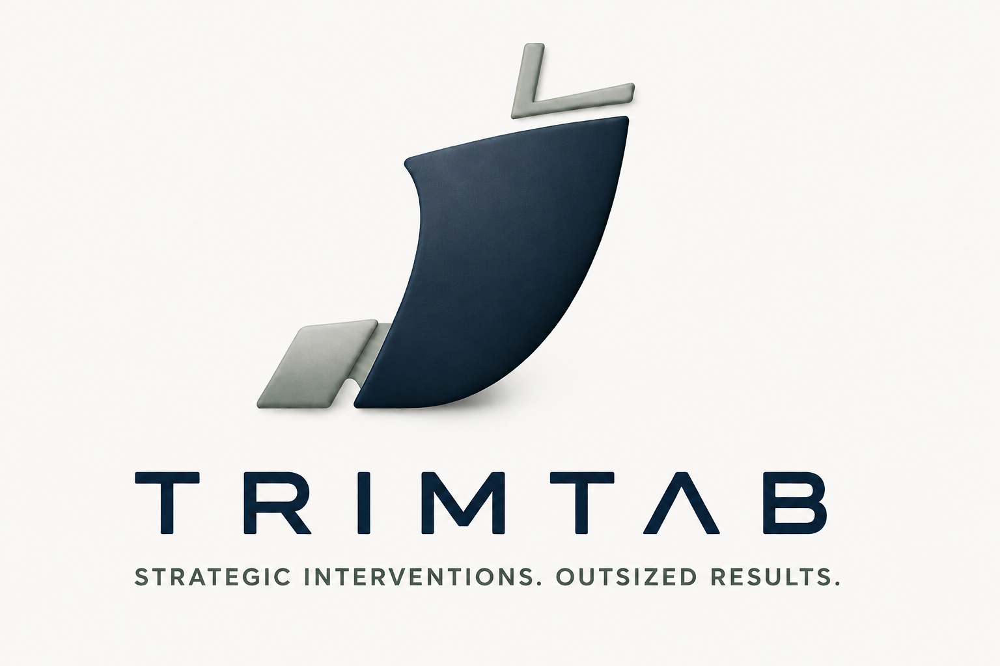

Fractional COO services for founder-led consumer goods companies.
A trim tab is a small attachment on a boat's rudder that lets you steer something massive with minimal effort.
It keeps a vehicle balanced and moving efficiently without constant manual correction. That's the model: precise operational interventions — the right systems, processes, cadence, and decisions — that create outsized impact across the business.
A familiar pattern for almost every founder-led company on the verge of scaling:
Institutional knowledge lives in people's heads, not in systems that survive turnover.
Leadership can't see what's actually happening across the business in real time.
No regular cadence for planning, reporting, or accountability — it all happens ad hoc.
Finance, supply chain, commercial, and ops each operate locally instead of as one system.
A senior executive and experienced operator who connects every function into one coherent operating system — so the business moves as one, instead of departments pulling in different directions.
The sweet spot: founders who want executive-level operational discipline, without the full-time executive price tag.